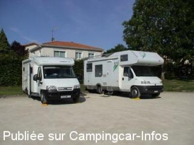
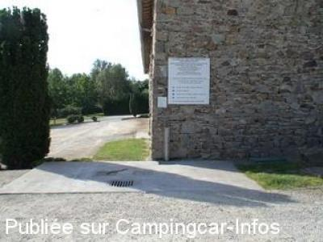

ASN = Aire de services avec stationnement nuit possible de :
LE TALLUD
(N° 504)
Accès/adresse :
Rue de Boisseau
Base de Loisirs Pierre Beaufort
79200 LE TALLUD
Base de Loisirs Pierre Beaufort
79200 LE TALLUD
Latitude : (Nord) 46.64054° Décimaux ou 46° 38′ 25′′
Longitude : (Ouest) -0.26654° Décimaux ou 0° 15′ 59′′
Tarif : 2011
Stationnement, services : 8 €
WIFI carte 7 €
Type de borne : Artisanale
Services :


Tous commerces
Autres informations :
ouverte toute l'année
10 emplacements
Tel : +33 (0) 549 969 053

Le 23/08/2006 par bwu

Le 23/08/2006 par bwu
de
Jaquetroc
le 17/07/2011 :
§
Après plein de haltes magnifiques, nous sommes très déçu par cet endroit. Une nuit à 8€ dans un cadre ouvert à tous vents et à tout le monde, la poubelle qui déborde et un branchement électrique inexistant. Après achat d'une carte wifi à 7 €, nous ne pouvons pas nous connecter et la patronne du camping nous prend quasiment pour des imbéciles et nous dit que nous ne savons pas nous brancher et ne nous rembourse pas. A notre avis, la borne était défectueuse car ça fonctionnait à la réception . Seul point positif: une vue magnifique d'un méandre du Thouet dans une belle nature (mais ça c'est gratuit et ça appartient à tout le monde).
§
Après plein de haltes magnifiques, nous sommes très déçu par cet endroit. Une nuit à 8€ dans un cadre ouvert à tous vents et à tout le monde, la poubelle qui déborde et un branchement électrique inexistant. Après achat d'une carte wifi à 7 €, nous ne pouvons pas nous connecter et la patronne du camping nous prend quasiment pour des imbéciles et nous dit que nous ne savons pas nous brancher et ne nous rembourse pas. A notre avis, la borne était défectueuse car ça fonctionnait à la réception . Seul point positif: une vue magnifique d'un méandre du Thouet dans une belle nature (mais ça c'est gratuit et ça appartient à tout le monde).
de
hymerke1307
le 06/11/2009 :
Aire (et village) FANTASTIQUE dans une cadre magnifique avec tous les services (même l'électricité) pour seulement 6€!!!
Aire (et village) FANTASTIQUE dans une cadre magnifique avec tous les services (même l'électricité) pour seulement 6€!!!
de
YB
le 17/08/2007 :
ATTENTION ! L'aire de services située à PARTHENAY à la base de loisirs est maintenant payante, et quand je dis payante, c'est peu dire : pour passer la nuit ou vider les eaux grises et les toilettes 8€. Nous ne sommes pas sur la cote d'azur. Si vous ètes de passage dans le coin faites 15 de km en plus et allez à VERNOUX EN GATINE dans un cadre super. Vous aurez droit à tout et gratuitement. Faire passer le message.
Un camping-cariste qui n'est pas prêt d'oublier sa mésaventure.
ATTENTION ! L'aire de services située à PARTHENAY à la base de loisirs est maintenant payante, et quand je dis payante, c'est peu dire : pour passer la nuit ou vider les eaux grises et les toilettes 8€. Nous ne sommes pas sur la cote d'azur. Si vous ètes de passage dans le coin faites 15 de km en plus et allez à VERNOUX EN GATINE dans un cadre super. Vous aurez droit à tout et gratuitement. Faire passer le message.
Un camping-cariste qui n'est pas prêt d'oublier sa mésaventure.
de
Beat Wydler
le 23/08/2006 :
GPS 46.64094 -000.26656
Tag 6 €
GPS 46.64094 -000.26656
Tag 6 €